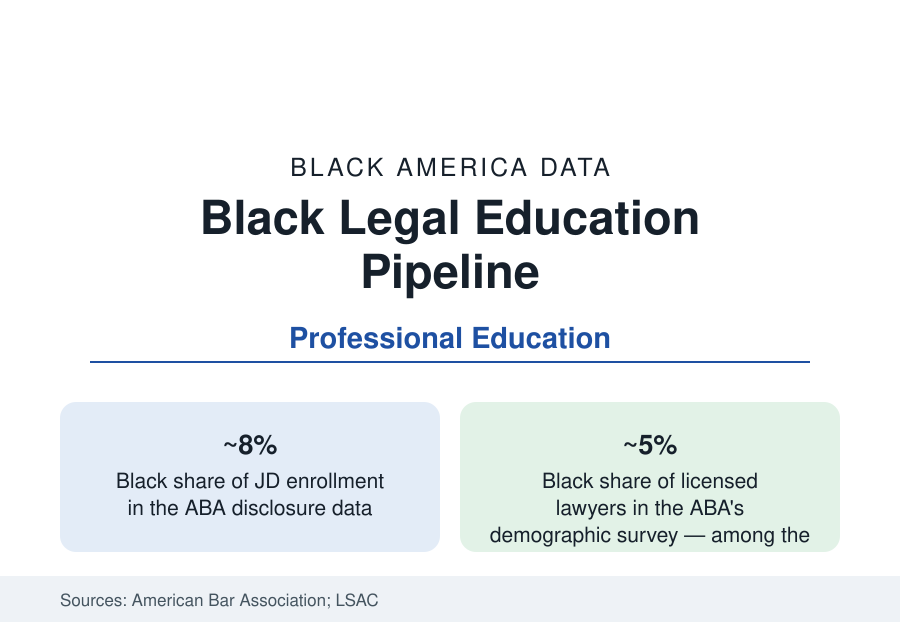

Black Education
Black Law Students and Legal Education: The Pipeline to a Thin Profession
Black students are about eight percent of law school enrollment — feeding a profession where Black lawyers hold about five percent. The ABA and LSAC data.

The legal profession is, by its own bar association's surveys, among the least diverse of America's learned professions: Black lawyers form about five percent of licensed attorneys, a share that has moved by fractions of a point across a generation. The law school pipeline explains the profession's near future in the ABA and LSAC data — Black applicants and matriculants in the high single digits, an HBCU law school system carrying a third of the production, and a bar examination passage gap that filters the pipeline's end. This article reports the legal education data.
Applicants, Admission, and the LSAT File
The LSAC's applicant data open the file: Black applicants form a share of the law school applicant pool in the range of an eighth, and Black matriculants a smaller share — the admissions funnel's arithmetic running through the LSAT, whose mean scores differ by race in the Council's published analyses by margins that translate, under the rankings-driven admissions market, into stratified placement: Black students concentrate in the broad-access tiers of the law school hierarchy and in the HBCU law schools, and are thinnest in the highest-ranked schools whose graduates feed the judiciary, the large firms, and the academy. The debt data complete the stratification: Black law graduates carry the profession's highest average educational debt in the ABA's young-lawyer surveys (frequently in six figures above the overall mean), entering a labor market whose entry salaries are famously bimodal — a distribution that sorts by school tier, and therefore by the admissions funnel behind it.
The HBCU Law Schools' Share
Six HBCU law schools — Howard, Thurgood Marshall (Texas Southern), FAMU, Southern, North Carolina Central, and the University of the District of Columbia — enroll a share of Black JD students wildly disproportionate to their size: across the modern series, these six schools have produced roughly a third of all Black law graduates in many years, and their alumni dominate the Black judiciary of the South and the public-interest and government bars nationally. Howard Law's lineage is the profession's civil-rights architecture itself (Charles Hamilton Houston's deanship made it the movement's legal laboratory). The schools' outcomes data are the pipeline debate's contested ground: their graduates' bar passage runs below the national means (the resource and entering-credential variables of the funding file apply), while their production of Black judges, prosecutors, public defenders, and elected officials — the public law workforce — exceeds every comparator in the alumni data. The accreditation era's standards fights (the ABA's bar-passage standard enforcement waves) repeatedly center these schools, because the standard's application and the pipeline's survival are, in the data, the same question.
Bar Passage: The Final Filter
The National Conference of Bar Examiners' data and the state bars' published statistics record the passage gap plainly: first-time bar passage for Black examinees runs materially below the overall rate in most jurisdictions — in the range of ten to twenty points in several of the largest states' recent administrations — narrowing on repeat attempts until ultimate passage (within two years, the ABA's measure) closes much but not all of the gap. The determinants literature points to the accumulated pipeline (entering credentials, debt-driven work during study, bar-preparation access — commercial courses priced in the thousands) rather than the examination's content alone, while the exam's critics and defenders argue its validity in the profession's journals. The licensing alternatives now in motion — diploma privilege episodes, supervised-practice pathways in a growing list of states — enter the data as the gap's newest policy variable, watched by both sides for their passage-equivalent outcomes by race.
The Profession the Pipeline Feeds
The ABA's demographic survey and the industry censuses distribute the five percent: Black lawyers concentrate in government and public service (the highest shares), solo and small-firm practice, and the public-interest bar; the large-firm partnership ranks record Black equity partners in the range of two percent in the NALP data, the federal judiciary's Black share has climbed into the low teens with appointment waves, state benches vary by how judges are selected, and law faculties record Black shares in the mid-single digits in the AALS data. The pipeline logic is circular and documented at every joint: each tier's thinness rations the next tier's mentorship, clients, and clerkship networks — which is why the LSAC's applicant table, twenty years upstream of the partnership census, is treated by the profession's diversity literature as its leading indicator.
Reading the Law Data
Law is the profession that writes the rules for all the others in this reference, and its own numbers are among the thinnest — five percent of lawyers, two percent of equity partners, produced by a pipeline whose every filter (test, tier, debt, bar) is separately measured. The six HBCU law schools stand in the data as the system's load-bearing exception: a third of the Black bar, from six buildings, against the gradient of the whole apparatus.
More in Black Education
Black Educational Attainment: High School Parity, the College Gap
About 89 percent of Black adults hold a high school diploma and one in four holds a bachelor's degree or higher — the attainment ladder, the college completion gap, and the generational trend.
Historically Black Colleges and Universities: Enrollment and Degrees
More than 100 HBCUs enroll roughly 290,000 students and award about one in six Black bachelor's degrees — an outsized share from a small sector. The federal education data.
Black College Enrollment: 2.4 Million Students
About 2.4 million Black students are enrolled in American colleges — nearly two-thirds of them women. The NCES enrollment data by sector, level, and trend.
Source: American Bar Association, Standard 509 disclosures and lawyer demographic surveys; Law School Admission Council applicant data; National Conference of Bar Examiners passage data.